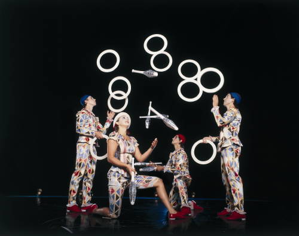

-
Letter from Paris: Contemporary Circus and the Couch Fort
by Benjamin Evans February 14, 2012
Anyone who has been to the circus within the last decade or so does not have to be told that things have changed considerably since the days of the traditional big top. High-wire acts, jugglers, tumblers, trapeze artists, and clowns might still be there, but the contexts of their performances have changed enormously. Since moving to Paris a year ago, I’ve been fortunate enough to witness four performances that fall under this expanding rubric of “contemporary circus.” Without exception, they have been powerful, fascinating, and at times very moving.
The best known contemporary circus is unquestionably Cirque du Soleil, the group generally credited with inspiring most of the form’s innovations over the last twenty years. Its enormous reputation is entirely deserved. Its production, Corteo, which concluded its Paris run at the end of December, is emblematic of everything contemporary circus can be. Traditional acts (tumblers, stilt-walkers, jugglers, and so forth) follow each other in sequence, but here they are threaded together in a loose and poetic narrative, in this case the antic funeral of a clown, cortéo being the Italian word for cortège. The staggering difficulty of the acrobatic feats can almost get lost in the lavish costuming and swirling set-changes. The scale is nothing short of epic, and the emphasis is clearly on poetics and the elaborate construction of fantasy.
At the same time, particularly in the self-reflexive Corteo (which is, after all, a circus about a circus), Cirque du Soleil’s sustained theatricality maintains the basic tradition of the circus. Other instantiations of contemporary circus stretch the boundaries of the concept even farther, into genuinely interdisciplinary and uncategorizable territory. Au Revoir Paraplue, the phantasmagoric creation of James Thierrée, is neither dance nor theatre nor performance art nor circus nor concert, yet somehow it is all of the above. While considerably less grand in scale than Corteo (there are only five performers), the presentation is arguably more poetic, with less concern for presenting established circus tropes. Very (very) loosely based on the myth of Orpheus, it presents the narrative of descent into a mysterious underworld in which constant transmogrifications of people, places and things are the norm. Surrealist juxtapositions abound as the work nimbly leaps from tragedy to slapstick to something beyond such simple terms, an expression of pure delight in creativity itself. Here, the performers are not specialists in juggling or ring-spinning, but rather generalists of movement whose bodies appear to lack joints altogether. The entire purpose isn’t the celebration of physical dexterity, but the physical realization of unbounded imagination.
However, not all contemporary circus follows these lines of poetic extravaganza. The Russian clown family known as Semianyki, while still wildly creative, is more interested in fun, madness and anarchy than in poetic adventures in the underworld. The world of Semianyki (which I visited in May at the fantastic Théâtre du Rond-Point) is a clown version of the stereotypical, Simpsons-esque family: a deadbeat dad, a perpetually pregnant and authoritarian mom, two daughters (nerd and goth), a manic maniac son, and a cute but chaosophilic baby. The tradition of clowning has a rich and complex history quite apart from the circus, and while one might interpret Semianyki’s pantomime mayhem as social critique, the vibe is Tim Burton, not Samuel Beckett. The members of the family all have very distinct personalities, but share a general tendency to enjoy tormenting one another and an unequivocal love of mayhem that often involves audience participation in the form of water-guns and pillow fights. While this striving comic pandemonium separates them from more “serious” circus, they have in common with it an incredible cleverness and wit as they transform experiences of the everyday into something astonishing, whether magical or absurd.
This element of transformation is nowhere better expressed than in the smallest of contemporary circus shows I’ve seen recently, Le Cirque Invisible This astonishing two-person performance is presented by the husband and wife team of Jean-Baptiste Thierrée and Victoria Chaplin (daughter of Charlie). The sixty-year-old Chaplin bamboozles her audience with ingenious costumes that allow her to transform from a dainty coquette into a horse (or a peackock or a lizard or a satellite dish), all right in front of our eyes as she gyres, ambles, and creeps around the stage. It is very much like watching a child at play with elements from its own imagination (all the more so as Chaplin appears to have astonishingly stopped aging at about 14). It brought me back to my early transformations of the living room into invulnerable forts through careful reorganizations of the couches and pillows – forts I could see, feel, and phenomenally inhabit. Chaplin recreates this act of changing the world through pure will, and we cannot help but be drawn into this alchemical process. Paired with Chaplin’s wizardry is the ludicrous, foolish, bewildering magic act of Thierrée (father of James, above). Completely opposite from the “street-magic” hustlers popular in recent years, Thierrée’s work frequently breaks the most central rule of all magic — never let anyone know how it is done. His various magician-personas fly through sequences of familiar tricks so quickly, and with such stereotypical showmanship, that the audience can frequently see the handkerchief up the sleeve or the poorly-palmed coin. It is as if the magician himself is somehow unimpressed with his old tricks as he races through them, some of them quite obviously from the sorts of “magic kits” sold to kids at toy stores. This extraordinary strategy makes the real magic, the tricks that suddenly happen that we cannot explain, all the more head-spinning. Thierrée’s genius is to make the magic itself visible, to secretly occupy a space in common with his audience rather than patronizing them with alleged wizardry.
All four examples of recent contemporary circus, in spite of their diversity, reveal the fascinating place circus today occupies between the real and the unreal. “Reality Television”, when it blossomed onto the cultural scene in the 90’s, made a claim to have some connection with “reality” since it portrayed “real people” in real (if bizarre) situations. Bikini-clad twenty-somethings went spearfishing to “survive”, terrified housewifes ate spiders, silly people went on bad dates, and people got locked in a lavish house where we could watch them squabble. It was all rather sordid and stupid, and everybody knew it was all as fake as professional wrestling, as contrived as any soap opera. During the same period, our pop-cultural images of “unreality” developed an incredible sophistication: We can now quite blithely watch completely believable alien invasions, nuclear Armageddons, natural disasters, and battles with armies of Orcs. Paradoxically, Hollywood’s power to convincingly create absolutely anything destroys our ability to believe in what we see, since we know in advance that it is all a mere product of special effects.
In stark contrast, contemporary circus is both far more real and unreal than anything capable of being produced in a movie or television studio. During one act of Cirque du Soleil’s Corteo, a team of jugglers attempted a particularly complicated maneuver and ended up not making it. Rings were dropped and scattered everywhere even after the third attempt. But in this “failure” lies the core success of the circus: these actually are real people doing real things directly in front of us! There were no computer graphics involved when the trapeze artist did a quintuple somersault in the air, and Victoria Chaplin really could have fallen as she eased herself back and forth across a real tight-rope. Circus is first and foremost about reality. Amazing, incredible, breathtaking, and tremendously risky reality.
At the same time, it is also increasingly about unreality, about fantasy. With the move from merely showcasing stunts to generating poetic narratives, contemporary circus is all about the fabrication of another universe, one in which our laws do not apply. The gravity is circus gravity, the laws are circus-laws. In spite of the lack of digital special effects (indeed because of this lack), viewers must imaginatively meet the performers, assisting in the formation of this imaginary world. This is perhaps why I found the Cirque Invisible the most interesting of the four. Chaplin’s transformations, while undeniably ingenious, were not as slick as the special effects in “The Matrix”, nor even as slick as those of Corteo There were occasional awkward gaps and the audible clicking of hidden clips were reminders that these were, after all, costumes. But, by virtue of this, my own imagination was able to step in more actively, to participate in the building of the couch fort. Clearly the same process was happening in Corteo or Parapluie, but Chaplin’s work made this participation itself visible and a part of the act. In making the usually invisible apparatus of imagination itself visible, in portraying its unconscious machinations so forcefully, Chaplin and Thierrée accomplish more powerfully the goals of many avant-garde artists than the artists themselves.
Which reminds me. When we entered the theatre space, a jovial usher politely encouraged us to “enjoy the spectacle”. I was struck by this, as I assumed that the word meant basically the same thing in both French and English. It seemed to me that this fellow was saying something weird, along the lines of “Enjoy the tremendous extravaganza!” But, like so many false cognates in the two languages, the word “spectacle” in French doesn’t have the same hyperbolic connotations as its English homophone, and can be used to describe pretty much any theatrical performance. This got me thinking about Guy Debord, the alcoholic revolutionary who ruled the ranks of the Situationist International with an iron fist, and whose “Society of the Spectacle” has inspired so many MFA students. For Dubord the spectacle was neither a simple theatrical performance, nor a superlative of some sort, but a term to describe an entire complex system of images that have come to “replace” authentic life and which has lead to the creation of the stupefied mass public. Dubord’s solution to this problem involved producing “situations” that might jar and disrupt us from our cretinized stupor. Of course, nothing pleases certain artists more than deprecating an idiotic mass culture of which they are not a part, and the historical avant-garde has always reveled in such mythical elitist foolishness.
But Dubord’s proposed solution of jarring engagement certainly rings a bell with my experience of recent circus performance. Common to all its iterations the circus continues to call us to run away and join it. Our faculties of imagination, curiosity, and wonder (which lie dormant for so many of us in our culture) are summoned to participate in the creation of a world in a way other forms of entertainment technically cannot offer us. The circus viscerally celebrates the body through acrobatics while calling forth the most politically important faculty of our minds, the imagination. Spielberg’s alien might look more realistic than the one Victoria Chaplin could make, but it doesn’t feel as realistic because I didn’t participate in its creation. Everything was done for me before I got there.
Like all entertainment, the circus can be accused of mere escapism, but this is escapism of a positive kind, escape to rather than escape from. For me at least, this escape is lasting: The provocation made to my imagination not only leaves me eager to run away and join the circus but also to realize its unvanquished sense of possibility here in the real world.